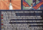
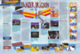

Panzer Dragoon Articles
Panzer
Dragoon Interview |
||
 |
A Gamefan Magazine
interview with Tomohiro Kondo of Team Andromeda on the first Panzer Dragoon
game. Tomohiro Kondo states: "The story takes place on an ancient
planet somewhere in the universe". |
Source: Gamefan
Magazine May 1995 |
Panzer
Dragoon Review |
||
 |
A Gamepro
review of Panzer Dragoon. The reviewer states: "Panzer Dragoon's
incredible graphics, tough shooting action, and innovative gameplay make
it a perfect first shooter for the Saturn". |
Source:
Gamepro August 1995 |